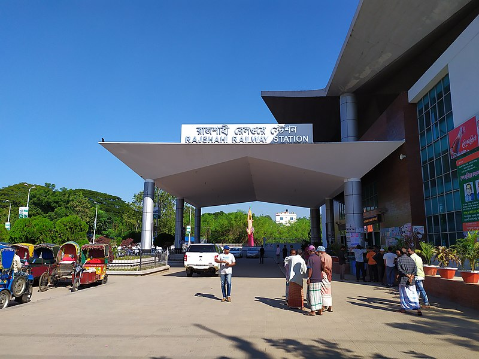

Khulna To Rajshahi Trains List
- KAPOTAKSHA EXPRESS
- SAGARDARI EXPRESS

Khulna To Dhaka Trains List
- CHITRA EXPRESS
- SUNDARBAN EXPRESS
Get exclusive train news
Rail transport in Bangladesh (the then British India) began on 15 November 1862, when 53.11 km of 5 ft 6 in (1,676 mm) (broad gauge) line was opened between Darshana in Chuadanga District and Jogotee in Kushtia District.